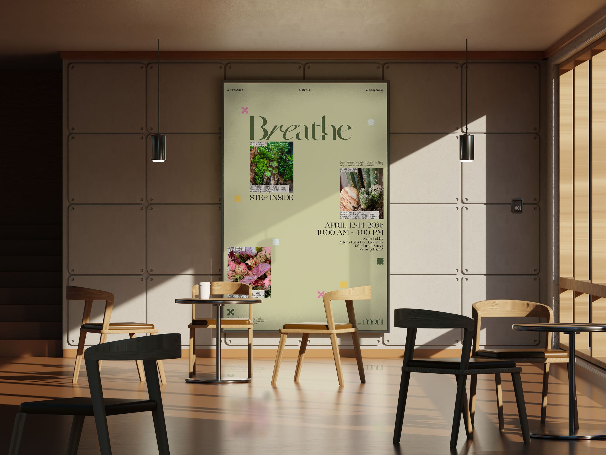
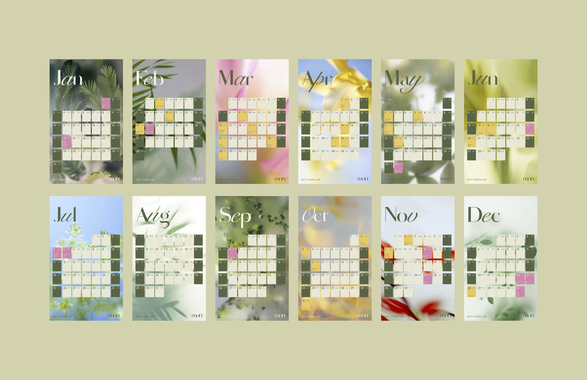

A DIY terrarium kit that invites people to slow down and reconnect.
Designed for urban lifestyles, MORI offers a gentle transition between work and rest — a calming, low-effort ritual built around a simple, living system.
Through product, experience, and visual language, MORI reframes wellness as something that unfolds naturally over time.
Product & Experience

A gentle transition between work and rest — a ritual that grows slowly, over time.
Everyday Ritual

Project description
MORI is a lifestyle brand that brings the quiet rhythm of growth into everyday life. Centered around a DIY terrarium kit, it invites users to slow down and reconnect through a simple, living system.
Designed for urban lifestyles, MORI offers a gentle transition between work and rest, creating a calming, low-effort ritual. Through product, experience, and visual language, it reframes wellness as something that unfolds naturally over time.
Credits
Special thanksPamela Olecki
MORI is a lifestyle brand that brings the quiet rhythm of growth into everyday life. Centered around a DIY terrarium kit, it invites users to slow down and reconnect through a simple, living system.
Designed for urban lifestyles, MORI offers a gentle transition between work and rest, creating a calming, low-effort ritual. Through product, experience, and visual language, it reframes wellness as something that unfolds naturally over time.
Designed for urban lifestyles, MORI offers a gentle transition between work and rest, creating a calming, low-effort ritual. Through product, experience, and visual language, it reframes wellness as something that unfolds naturally over time.
Designed for urban lifestyles, MORI offers a gentle transition between work and rest, creating a calming, low-effort ritual. Through product, experience, and visual language, it reframes wellness as something that unfolds naturally over time.
MORI is a lifestyle brand that brings the quiet rhythm of growth into everyday life. Centered around a DIY terrarium kit, it invites users to slow down and reconnect through a simple, living system.